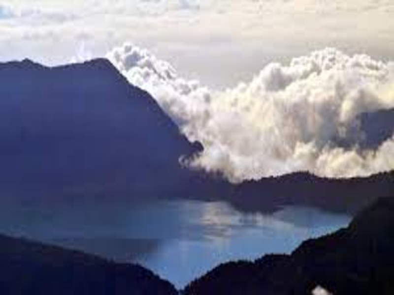

Menikmati Keindahan Danau Gunung Tujuh
Danau Gunung Tujuh merupakan danau yang terletak di desa Pelompek, kabupaten Kerinci, Jambi. Danau ini berada di kawasan Gunung Tujuh, sebuah gunung yang berada tepat di belakang Gunung Kerinci. Gunung Tujuh masih termasuk dalam wilayah Taman Nasional Kerinci Seblat yang merupakan Situs Warisan Dunia UNESCO.
Indahnya Pesona Danau Gunung Tujuh
Seperti namanya, danau gunung tujuh dikelilingi tujuh puncak gunung di Jambi. Tidak heran kalau tempat ini menjadi destinasi wisata yang menawarkan banyak panorama keindahan. Bagi pendaki gunung, Kerinci mungkin menjadi tujuan utama karena gunung tersebut merupakan gunung aktif tertinggi di Indonesia [3805 mdpl], tetapi bagi wisatawan yang ingin sekadar menikmati keindahan alam Kabupaten Kerinci, Danau Gunung Tujuh bisa menjadi pertimbangan sebagai tujuan wisata.
Selain memiliki panorama alam yang menakjubkan, jalur yang dilalui juga jauh lebih mudah daripada Gunung Kerinci. Danau Gunung Tujuh juga merupakan salah satu Danau tertinggi di Indonesia, bahkan danau tertinggi di Asia Tenggara. Danau ini berada di ketinggian 1.950 meter di atas permukaan laut dan merupakan danau yang berada diketinggian nomor dua di Indonesia setelah 13 Danau-danau kecil yang terdapat di Gunung Talamau Sumatra Barat di ketinggian 2750 m dpl.Dengan ketinggian hampir 2 kilometer dpl itu bisa dibayangkan betapa dinginnya air Danau Gunung Tujuh di pagi hari. Meskipun begitu, berendam di Danau Gunung Tujuh dengan air yang sangat dingin menjadi tantangan sendiri bagi para pendaki.

Geografi Danau Gunung Tujuh
Sesuai namanya danau ini dikelilingi oleh tujuh gunung, yaitu Gunung Hulu Tebo (2.525 mdpl), Gunung Hulu Sangir (2.330 mdpl), Gunung Madura Besi (2.418 mdpl), Gunung Lumut yang ditumbuhi berbagai jenis Lumut (2.350 mdpl), Gunung Selasih (2.230 mdpl), Gunung Jar Panggang (2.469 mdpl), dan Gunung Tujuh itu sendiri (2.735 mdpl). Di beberapa gunung ini terdapat sumber air, yang menyebabkan air di danau ini tidak pernah habis.